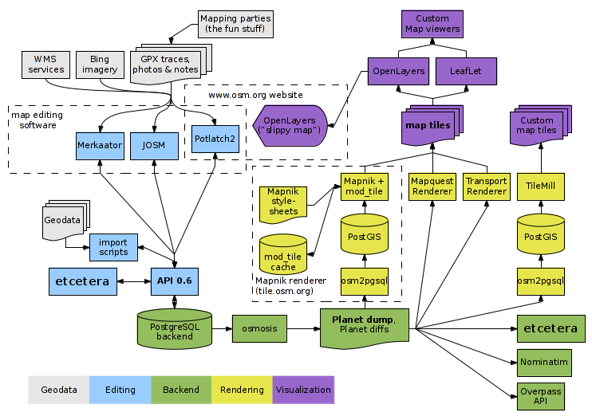

Содержание
1 От автора
2 Постановка задачи
2.1 Техническое задание
2.2 Дизайн
3 Логика
4 Установка и настройка компонент
4.1 Debian
4.1.1 Ставим Rails OSM Server
4.1.1.1 Устанавливаем нужные пакеты:
4.1.1.2 Настройка API-сервера
4.1.1.3 Добавляем сервис OSM в автозагрузку
4.1.1.4 Включение apache2 прокси для OSM-Rails
4.1.2 Базовая настройка пересылки почты
4.1.3 Импорт существующей базы данных объектов
4.1.3.1 Ставим osmosis
4.1.3.1.1 Заливаем базу
4.1.4 Отрисовка гео-данных
4.1.4.1 Установка с помощью puppet-шаблона
4.1.4.2 Ручная установка
4.1.4.2.1 Ставим mapnik
4.1.4.2.2 Ставим tilecache
4.1.4.2.3 Ставим kothic
4.1.5 Ошибки
4.1.5.1 После заливки данных osmosis-ом проблемы с добавлением данных/пользователей на карту/сайт
4.2 Gentoo
4.2.1 Ставим postgres и postgis
4.2.2 Ставим ruby
4.2.3 Ставим Mapnik
4.3 Создаём базовый конфиг для mapnik
4.4 Создание полноценного стиля с помощью Mapcss
4.4.1 Установка kothic
4.4.2 Создание своего стиля mapcss
4.4.3 Конвертирование mapcss->mapnik
4.4.4 Правка конфига tilecache и подключение слоя в openlayer
5 Отображение данных
5.1 Создаём простую страничку для отображения своих данных
5.2 Ставим копию openstreetmap.ru
6 Правка компонент под себя
6.1 Названия слоёв
6.1.1 Переименовываем
6.1.2 Удаляем лишние слои
6.2 Скрипты по миграции данных
6.2.1 Обновление локальной базы OSM
6.2.2 Обновление osm2pgsql-стиля
6.2.3 Скрипт миграции данных из drsk_osm в drsk_gis
7 Исправление ошибок и проблем
7.1 Ошибки mapnik
7.1.1 generate_tiles
7.2 Ошибки osm2pgsql
7.3 Ошибки mod_tile
8 Полезные ссылки
9 Выдержки из переписки
9.1 Объяснение логики системы
Данная инструкция не претендует на абсолютную точность. Написана по памяти, с уточнением мест, где лежат грабли, на которые наступил автор. За точной информацией стоит сходить по ссылкам, в которых по шагам расписывается установка Mapnik, Mapnik/PostGIS, The_Rails_Port, Mod_tile, tilecache[1],osmosis,openlayers и примеры кода для openlayers[2]. Основная задача данной инструкции объяснить принцип и логику построения подобной системы, указать направления получения информации и изучения, чтобы читающий, при установке подобной системы тыкался носом как котёнок меньше, чем это делал автор, а так же не утомлять повторными расспросами уважаемое сообщество[3]. Если же читающие добавят информации, уточнят неточности и в конце концов сделают из этой страницы полноценное руководство - то автор будет рад.
Успехов в создании локального сервера!
Необходимо иметь локальный (в локальной сети предприятия) сервер, на который можно сохранять коммерческие гео-данные, преднозначенные для использования внутри предприятия. Данные заносить с помощью josm. Так же на этом локальном сервере должна рисоваться и отображаться пользователям карта по этим данным.
Более того, необходимо иметь обновляемую копию данных России в виде локальной базы, по которой будет рисоваться подложка/слой OSM. Т.е. данные OSM и внутренних гео-данных предприятия не будут смешиваться. OSM данные будут использоваться как слой для рисования в JOSM или же как полупрозрачный фон-подложка при просмотре карт, построенных по гео-данным предприятия.
Данная задача реализуется следующими инструментами:
Основная схема представлена на изображении: 
Логика работы системы состоит в следующем
http://a.tah.openstreetmap.org/Tiles/tile/${z}/${x}/${y}.png
на
http://наш_локальный_сервер_osm/drsk/${z}/${x}/${y}.png
так, чтобы тайлы брались с mod_tile с секции конфига о drsk.
Первый этап выполнен - теперь мы можем подключаться josm-ом на http://наш_локальный_сервер_osm/api и добавлять туда данные, а потом просматривать их как тайлы на основной странице http://наш_локальный_сервер_osm/.
Логика настройки подложки osm из данных карты с openstreetmap.org. Т.е. мы хотим брать (регулярно) дамп, к примеру, России и отрисовывать его локально. И пользоваться этим слоем как подложкой для рисования/просмотра своих данных предприятия. При этом данные предприятия и данные свободной карты не смешиваются. Итак, донастройка сервера:
Установка и настройка компонент
Взято во многом тут.
Новый вариант:
apt-get install postgresql-9.1-postgis postgresql-server-dev-9.1 postgresql-contrib-9.1 ruby-rmagick rails rubygems git ruby1.9.3 ruby-switch libxml-ruby1.9.1 libxml2-dev ruby1.9.1 libruby1.9.1 ruby1.9.1-dev ri1.9.1 libmagickwand-dev libxml2-dev libxslt1-dev apache2 apache2-threaded-dev build-essential git-core postgresql postgresql-contrib libpq-dev postgresql-server-dev-all libsasl2-dev checkinstall osm2pgsql php5-odbc php-db php5-pgsql python-mapnik2
gem1.9.1 install bundle --no-rdoc --no-ri
mkdir -p /opt/osm
cd /opt/osm/
git clone https://github.com/openstreetmap/openstreetmap-website.git
cd openstreetmap-website
bundle install
Устанавливаем nodejs:
cd /tmp
wget -N http://nodejs.org/dist/node-latest.tar.gz
tar xzvf node-latest.tar.gz && cd node-v*
./configure
checkinstall -y --install=no --pkgversion $(echo $(pwd) | sed -n -re's/.+node-v(.+)$/\1/p') make -j$(($(nproc)+1)) install
dpkg -i node_*
Правим конфиги, задаём пользователя БД:
cp config/example.application.yml config/application.yml
cp config/example.database.yml config/database.yml
Создаём пользователя postgres и базы:
su postgres
psql
CREATE USER openstreetmap WITH PASSWORD 'myPassword';
\q
Создаём базы (где drsk_osm - это основная база, имя исправлено со стандартного openstreetmap в файле **config/database.yml**):
createdb -E UTF8 -O openstreetmap drsk_osm
createdb -E UTF8 -O openstreetmap osm_test
createdb -E UTF8 -O openstreetmap osm
Даём возможность пересоздания тестовой таблицы пользователю, чтобы прошёл тест rake (ниже):
psql
GRANT ALL PRIVILEGES on DATABASE osm_test to openstreetmap;
ALTER USER openstreetmap with CREATEDB;
alter role openstreetmap superuser;
\q
Ставим расширение **btree_gist** иначе migrate вывалится с ошибкой:
psql -d drsk_osm -c "CREATE EXTENSION btree_gist"
psql -d osm_test -c "CREATE EXTENSION btree_gist"
psql -d osm -c "CREATE EXTENSION btree_gist"
Переходим в root:
exit
Компилим библиотеки:
cd /opt/osm/openstreetmap-website/db/functions
make libpgosm.so
cd ../..
su postgres
psql -d drsk_osm -c "CREATE FUNCTION maptile_for_point(int8, int8, int4) RETURNS int4 AS '`pwd`/db/functions/libpgosm', 'maptile_for_point' LANGUAGE C STRICT"
psql -d drsk_osm -c "CREATE FUNCTION tile_for_point(int4, int4) RETURNS int8 AS '`pwd`/db/functions/libpgosm', 'tile_for_point' LANGUAGE C STRICT"
psql -d drsk_osm -c "CREATE FUNCTION xid_to_int4(xid) RETURNS int4 AS '`pwd`/db/functions/libpgosm', 'xid_to_int4' LANGUAGE C STRICT"
Выходим из под пользователя postgres в root:
exit
Запускаем инициализацию баз:
bundle exec rake db:migrate RAILS_ENV=development
Запускаем тест:
bundle exec rake test
Вывлится несколько ошибок вида:
Attribute lat redefined
Их можно игнорировать.
Собственно можно запустить сервер:
bundle exec rails server
cd /opt/osm/openstreetmap-website/config
Правим параметры в application.yml:
server_url: "osm.company.ru"
generator: "OSM Объекты Компании"
email_from: "Компания OSM <osm@company.ru>"
email_return_path: "osm@company.ru"
Правим параметры в database.yml:
development:
adapter: postgresql
database: drsk_osm
username: openstreetmap
password: XXXXXXX
host: localhost
encoding: utf8
test:
adapter: postgresql
database: osm_test
username: openstreetmap
password: XXXXXXX
host: localhost
encoding: utf8
production:
adapter: postgresql
database: osm
username: openstreetmap
password: XXXXXX
host: localhost
encoding: utf8
Добавляем сервис OSM в автозагрузку
Создаём скрипт запуска **/etc/init.d/osm-rails-server**. Скрипт нужно доделывать stop почему-то не работает (по TERM-сигналу):
#! /bin/sh
### BEGIN INIT INFO
# Provides: osm_rails
# Required-Start: $syslog $time $network
# Required-Stop: $syslog $time $network
# Default-Start: 2 3 4 5
# Default-Stop: 0 1 6
# Short-Description: Deferred execution scheduler
# Description: Debian init script for the atd deferred executions
# scheduler
## END INIT INFO
#
# Author: progserega <semenov@rsprim.ru>
#
OSM_PATH=/opt/osm/openstreetmap-website
PATH=/usr/local/sbin:/usr/local/bin:/usr/sbin:/usr/bin:/sbin:/bin
DAEMON=/usr/bin/ruby1.9.1
PIDFILE=/var/run/osm-rails-server.pid
#EXE=/usr/local/bin/bundle
EXE=/usr/local/bin/rails
test -x $DAEMON || exit 0
. /lib/lsb/init-functions
case "$1" in
start)
log_daemon_msg "Starting OSM Rails Server" "osm-rails-server"
cd ${OSM_PATH}
#start-stop-daemon --start -p $PIDFILE -b --chdir ${OSM_PATH} --exec ${EXE} -- exec rails server
start-stop-daemon --start -p $PIDFILE -b --chdir ${OSM_PATH} --exec ${EXE} -- server
log_end_msg $?
;;
stop)
log_daemon_msg "Stopping OSM Rails Server" "osm-rails-server"
killproc -p $PIDFILE $DAEMON
log_end_msg $?
;;
force-kill)
log_daemon_msg "Force kill OSM Rails Server" "osm-rails-server"
killall -9 ruby1.9.1
log_end_msg $?
;;
force-reload|restart)
$0 stop
$0 start
;;
status)
status_of_proc -p $PIDFILE $DAEMON rails && exit 0 || exit $?
;;
*)
echo "Usage: /etc/init.d/atd {start|stop|force-kill|restart|force-reload|status}"
exit 1
;;
esac
exit 0
Добавляем скрипт в автозапуск:
update-rc.d osm-rails-server enable
Или:
update-rc.d osm-rails-server start
Или
update-rc.d osm-rails-server start 3
Включение apache2 прокси для OSM-Rails
Т.к. Rails-порт запускается на порту 3000, то добавляем виртуальный хост в apache2 с перенаправлением на Rails. Создаём файл **/etc/apache2/sites-available/03_osm.rs.int_vhost.conf**:
<proxy balancer://mongrelcluster>
BalancerMember http://127.0.0.1:3000
</proxy>
#forward requests to mongrel cluster
<virtualhost *:80>
ServerName osm.rs.int
ServerAlias osm.prim.drsk.ru
ProxyPass / balancer://mongrelcluster/
ProxyPassReverse / balancer://mongrelcluster/
ProxyPreserveHost on
ErrorLog /var/log/apache2/osm.rs.int-error.log
</virtualhost>
Включаем виртуальный хост:
cd /etc/apache2/sites-enabled
ln -s ../sites-available/03_osm.rs.int_vhost.conf 03_osm.rs.int_vhost.conf
Включаем модуль **proxy** в apache2:
a2enmod proxy
a2enmod proxy_http
a2enmod proxy_balancer
service apache2 restart
Базовая настройка пересылки почты
Для того, чтобы сервер OSM мог отправлять почту во вне, нужно провести настройку **exim4**.
И запустить команду:
dpkg-reconfigure exim4-config
И сказать, что можно отправлять в интернет, relay только для localhost.
Импорт существующей базы данных объектов
apt-get install osmosis
Настраиваем сервисы отрисовки данных - ставим сервисы WMS и TMS слоёв, настраиваем их.
Установка с помощью puppet-шаблона
Для упрощения этой, как оказалось, непростой задачи (нужно было патчить не один пакет, т.к. вместе они работать не хотели), автор написал puppet шаблон. В принципе, это просто набор правил в определённом несложном синтаксисе (см. документацию по ресурсам puppet), по которым производятся последовательные действия. Даже не имея настроенного puppet-сервера, можно, согласно этим правилам установить соответствующие сервисы.
Если Вы далеки от puppet, то можно этот шаблон использовать как инструкцию:
Основная последовательность действий по установке находится тут.
В этой инструкции используются файлы, которые лежат тут, а так же шаблоны, которые лежат тут. В случае шаблонов необходимо будет их немного подправить, т.к. внутри них используются переменные из osm-render-server.pp. Т.е. нужно будет заменить вставки вида db_user="<%= @db_user %>" на db_user="your_db_user_name" и т.п.
apt-get install python-mapnik2 mapnik-utils
apt-get install tilecache
Берём данные из систем контроля версий:
mkdir -p /opt/osm/mapcss/kothic_converter_src/
cd /opt/osm/mapcss/kothic_converter_src/
hg clone https://code.google.com/p/kothic/
Накладываем патч для обеспечения парольного доступа к базе:
diff -ru kothic_orig/src/komap.conf kothic/src/komap.conf
--- kothic_orig/src/komap.conf 2013-02-06 16:17:11.000000000 +1100
+++ kothic/src/komap.conf 2013-02-08 09:38:40.000000000 +1100
@@ -3,9 +3,12 @@
db_proj = +init=epsg:3857
table_prefix = planet_osm_
db_user = postgres
+db_passwd = XXXXXX
db_name = drsk_gis
+db_host = localhost
+db_port = 5432
db_srid = 900913
world_bnd_path = /opt/osm/mapnik/world_boundaries
cleantopo_dem_path = /raid/srtm/Full/CleanTOPO2merc.tif
srtm_dem_path = /raid/srtm/srtmm.vrt
diff -ru kothic_orig/src/komap.py kothic/src/komap.py
--- kothic_orig/src/komap.py 2013-02-05 11:11:22.000000000 +1100
+++ kothic/src/komap.py 2013-02-08 09:35:10.000000000 +1100
@@ -78,6 +78,9 @@
libkomapnik.table_prefix = config.get("mapnik", "table_prefix")
libkomapnik.db_user = config.get("mapnik", "db_user")
libkomapnik.db_name = config.get("mapnik", "db_name")
+libkomapnik.db_passwd = config.get("mapnik", "db_passwd")
+libkomapnik.db_host = config.get("mapnik", "db_host")
+libkomapnik.db_port = config.get("mapnik", "db_port")
libkomapnik.db_srid = config.get("mapnik", "db_srid")
libkomapnik.icons_path = config.get("mapnik", "icons_path")
libkomapnik.world_bnd_path = config.get("mapnik", "world_bnd_path")
diff -ru kothic_orig/src/libkomapnik.py kothic/src/libkomapnik.py
--- kothic_orig/src/libkomapnik.py 2012-07-10 11:59:58.000000000 +1100
+++ kothic/src/libkomapnik.py 2013-02-08 09:37:34.000000000 +1100
@@ -27,6 +27,9 @@
table_prefix = ""
db_user = ""
db_name = ""
+db_passwd = ""
+db_host = ""
+db_port = ""
db_srid = ""
icons_path = ""
world_bnd_path = ""
@@ -343,13 +346,16 @@
<Parameter name="st_prefix">true</Parameter>
<Parameter name="user">%s</Parameter>
<Parameter name="dbname">%s</Parameter>
+ <Parameter name="password">%s</Parameter>
+ <Parameter name="host">%s</Parameter>
+ <Parameter name="port">%s</Parameter>
<Parameter name="srid">%s</Parameter>
<Parameter name="geometry_field">way</Parameter>
<Parameter name="geometry_table">%s%s</Parameter>
<Parameter name="estimate_extent">false</Parameter>
<Parameter name="extent">-20037508.342789244, -20037508.342780735, 20037508.342789244, 20037508.342780709</Parameter>
</Datasource>
- </Layer>"""%(layer_id, db_proj, subs, interesting_tags, table_prefix, geom, sql, intersection_SQL, db_user, db_name, db_srid, table_prefix, geom)
+ </Layer>"""%(layer_id, db_proj, subs, interesting_tags, table_prefix, geom, sql, intersection_SQL, db_user, db_name, db_passwd, db_host, db_port, db_srid, table_prefix, geom)
elif type == "postgis-process":
return """
<Layer name="l%s" status="on" srs="%s">
@@ -364,13 +370,16 @@
<Parameter name="st_prefix">true</Parameter>
<Parameter name="user">%s</Parameter>
<Parameter name="dbname">%s</Parameter>
+ <Parameter name="password">%s</Parameter>
+ <Parameter name="host">%s</Parameter>
+ <Parameter name="port">%s</Parameter>
<Parameter name="srid">%s</Parameter>
<Parameter name="geometry_field">way</Parameter>
<Parameter name="geometry_table">%s%s</Parameter>
<Parameter name="estimate_extent">false</Parameter>
<Parameter name="extent">-20037508.342789244, -20037508.342780735, 20037508.342789244, 20037508.342780709</Parameter>
</Datasource>
- </Layer>"""%(layer_id, db_proj, subs, sql, intersection_SQL, db_user, db_name, db_srid, table_prefix, geom)
+ </Layer>"""%(layer_id, db_proj, subs, sql, intersection_SQL, db_user, db_name, db_passwd, db_host, db_port, db_srid, table_prefix, geom)
elif type == "coast":
if zoom < 9:
return """
Правим конфиг /opt/osm/mapcss/kothic_converter_src/kothic/src/komap.conf:
[mapnik]
map_proj = +init=epsg:3857
db_proj = +init=epsg:3857
table_prefix = planet_osm_
db_user = postgres
db_passwd = XXXXXXX
db_name = drsk_gis
db_host = localhost
db_port = 5432
db_srid = 900913
icons_path = /opt/osm/mapnik/mapnik_icons/drsk/
world_bnd_path = /opt/osm/mapnik/world_boundaries
cleantopo_dem_path = /raid/srtm/Full/CleanTOPO2merc.tif
srtm_dem_path = /raid/srtm/srtmm.vrt
cleantopo_hs_path = /raid/srtm/Full/CleanTOPO2merchs.tif
srtm_hs_path = /raid/srtm/srtmhs.vrt
После заливки данных osmosis-ом проблемы с добавлением данных/пользователей на карту/сайт
Это происходит потому, что osmosis не обновляет индексы текущих идентификаторов (точек, линий, отношений, пользователей и т.д.). В результате сервер ругается у себя в логи (/opt/osm/openstreetmap-website/log/development.log) примерно так:
ERROR: duplicate key value violates unique constraint "current_nodes_pkey1"
Для этого нужно обновить индексы в базе (в нашем случае в drsk_osm):
SELECT pg_catalog.setval('acls_id_seq', (SELECT MAX(id) FROM acls));
SELECT pg_catalog.setval('changesets_id_seq', (SELECT MAX(id) FROM changesets ));
SELECT pg_catalog.setval('client_applications_id_seq', (SELECT MAX(id) FROM client_applications));
SELECT pg_catalog.setval('current_nodes_id_seq', (SELECT MAX(id) FROM current_nodes));
SELECT pg_catalog.setval('current_relations_id_seq', (SELECT MAX(id) FROM current_relations));
SELECT pg_catalog.setval('current_ways_id_seq', (SELECT MAX(id) FROM current_ways));
SELECT pg_catalog.setval('diary_comments_id_seq', (SELECT MAX(id) FROM diary_comments));
SELECT pg_catalog.setval('diary_entries_id_seq', (SELECT MAX(id) FROM diary_entries));
SELECT pg_catalog.setval('friends_id_seq', (SELECT MAX(id) FROM friends));
SELECT pg_catalog.setval('gpx_file_tags_id_seq', (SELECT MAX(id) FROM gpx_file_tags));
SELECT pg_catalog.setval('gpx_files_id_seq', (SELECT MAX(id) FROM gpx_files));
SELECT pg_catalog.setval('messages_id_seq', (SELECT MAX(id) FROM messages));
SELECT pg_catalog.setval('note_comments_id_seq', (SELECT MAX(id) FROM note_comments));
SELECT pg_catalog.setval('notes_id_seq', (SELECT MAX(id) FROM notes));
SELECT pg_catalog.setval('oauth_nonces_id_seq', (SELECT MAX(id) FROM oauth_nonces));
SELECT pg_catalog.setval('oauth_tokens_id_seq', (SELECT MAX(id) FROM oauth_tokens));
SELECT pg_catalog.setval('redactions_id_seq', (SELECT MAX(id) FROM redactions));
SELECT pg_catalog.setval('user_blocks_id_seq', (SELECT MAX(id) FROM user_blocks));
SELECT pg_catalog.setval('user_roles_id_seq', (SELECT MAX(id) FROM user_roles));
SELECT pg_catalog.setval('user_tokens_id_seq', (SELECT MAX(id) FROM user_tokens));
SELECT pg_catalog.setval('users_id_seq', (SELECT MAX(id) FROM users));
Взято [5].
Более того, можно посмотреть как это выглядит в бэкапе базы, сделав бэкап базы:
pg_dump -F p -b -f "drsk_osm.sql" -Upostgres drsk_osm
И поискать строки установки индексов:
fgrep pg_catalog.setval drsk_osm.sql
Получим:
SELECT pg_catalog.setval('acls_id_seq', 1, false);
SELECT pg_catalog.setval('changesets_id_seq', 104, true);
SELECT pg_catalog.setval('client_applications_id_seq', 1, true);
SELECT pg_catalog.setval('current_nodes_id_seq', 1621, true);
SELECT pg_catalog.setval('current_relations_id_seq', 5, true);
SELECT pg_catalog.setval('current_ways_id_seq', 64, true);
SELECT pg_catalog.setval('diary_comments_id_seq', 1, false);
SELECT pg_catalog.setval('diary_entries_id_seq', 1, false);
SELECT pg_catalog.setval('friends_id_seq', 1, false);
SELECT pg_catalog.setval('gpx_file_tags_id_seq', 1, false);
SELECT pg_catalog.setval('gpx_files_id_seq', 1, false);
SELECT pg_catalog.setval('messages_id_seq', 1, false);
SELECT pg_catalog.setval('note_comments_id_seq', 1, false);
SELECT pg_catalog.setval('notes_id_seq', 1, false);
SELECT pg_catalog.setval('oauth_nonces_id_seq', 1, false);
SELECT pg_catalog.setval('oauth_tokens_id_seq', 5, true);
SELECT pg_catalog.setval('redactions_id_seq', 1, false);
SELECT pg_catalog.setval('user_blocks_id_seq', 1, false);
SELECT pg_catalog.setval('user_roles_id_seq', 1, false);
SELECT pg_catalog.setval('user_tokens_id_seq', 12, true);
SELECT pg_catalog.setval('users_id_seq', 19, true);
Как раз это пример из неверных последовательностей - в результате чего добавление данных в базу не работало. И даже добавление нового пользователя вываливалось с ошибкой.
emerge -v dev-db/postgresql-server dev-db/postgis
Чтобы сборка постгреса не вываливалась с ошибкой про threads-unsafe:
USE="-threads" emerge -v dev-db/postgresql-server
Я лично поменял домашнюю директорию пользователя postgres:
#chown postgres:postgres -R /home/postgres
#/etc/init.d/postgresql-9.0 stop
#usermod -d /home/postgres postgres
#/etc/init.d/postgresql-9.0 start
Если поставится 9.x, то возникает проблема с путями. И возможно понадобится прописать соответствующие пути:
#echo "PATH=/usr/lib64/postgresql-9.0/bin
ROOTPATH=/usr/lib64/postgresql-9.0/bin
LDPATH=/usr/lib64/postgresql-9.0/lib64" > /etc/env.d/47postgres
# env-update
Ну и я добавил пользователю postgres следующее:
#echo "#!/bin/bash
export PATH="$PATH:/usr/lib64/postgresql-9.0/bin"
export LD_LIBRARY_PATH="/usr/lib64/postgresql-9.0/lib64" > /home/postgres/.bashrc
В основном всё ставится по статье The_Rails_Port. Где-то я могу ошибиться - пишу по памяти.
#emerge -v dev-lang/ruby
#emerge -v dev-ruby/rubygems dev-ruby/rmagick
Устанавливаем разные gem пакеты:
#gem install -v=2.3.14 rails
#gem install timecop
#gem install pg
#gem install ruby-openid
#gem install rack-openid
#gem install oauth
Скачиваем rails-сервер:
#mkdir /opt/osm
#git clone git://git.openstreetmap.org/rails.git
Инициализация rails:
#cd /path/to/rails_port/
#cp config/example.application.yml config/application.yml
#cp config/postgres.example.database.yml config/database.yml
#rake gems:install
Инициализация БД
#rake db:migrate
#env RAILS_ENV=production rake db:migrate
Запуск теста
Правим конфиг в rails (в нашем случае это /opt/osm/rails/config/database.yml):
#vim config/database.yml
Прописываем на все базы:
username: openstreetmap
password: secret
Запускаем тест:
#rake test
Ставим Mapnik
Вообще, в репозитариях есть mapnik2 (0.7 не собрался у меня) уже. И я его ставил командой:
# emerge -av sci-geosciences/mapnik
Перед этим, конечно, "размаскнул". Однако почему-то после установки там нет некоторых базовых скриптов - для конвертации xml и т.п., потому на всякий случай я в довесок взял mapnik из svn:
#cd /opt/osm/
#svn co http://svn.openstreetmap.org/applications/rendering/mapnik
Скачиваем границы мира:
#wget http://tile.openstreetmap.org/world_boundaries-spherical.tgz # (50 MB)
#wget http://tile.openstreetmap.org/processed_p.tar.bz2 # (357 MB)
#wget http://tile.openstreetmap.org/shoreline_300.tar.bz2 # (46 MB)
#wget http://www.naturalearthdata.com/http//www.naturalearthdata.com/download/10m/cultural/10m-populated-places.zip (1.5 MB)
#wget http://www.naturalearthdata.com/http//www.naturalearthdata.com/download/110m/cultural/110m-admin-0-boundary-lines.zip # (38 KB)
Сохраняем их, распаковываем в /opt/osm/mapnik/world_boundaries
Создаём базовый конфиг для mapnik
#./generate_xml.py osm.xml --host localhost --user postgres --dbname drsk_gis --symbols ./symbols/ --world_boundaries ../world_boundaries/ --port 5432 --password 'XXXXX' --epsg='900913'
#upgrade_map_xml.py osm.xml drsk.xml
Последняя команда нужна чтобы mapnik не ругался на конфиг.
Создание полноценного стиля с помощью Mapcss
Т.к. править конфиг mapnik-а (созданный в предыдущем разделе) практически нереально, то для полноценного создания стиля карты используются стили mapcss.
Логика такая:
Установка kothic
git clone https://github.com/kothic/kothic
Устанавливаем зависимости (список в README kothic):
emerge -v =dev-python/psycopg-2.4.5 dev-python/lxml dev-python/pip dev-python/pyproj media-fonts/unifont
pip install Shapely
В моём случае komap.py заработал только с версией 2.7 питона. С третьей - ругался.
Проверка работоспособности:
cd kothic/src
python komap.py --help
На данный момент 13.02.2013 по-умолчанию kothic генерирует конфиг, который подключается к postgis на localhost. Если необходимо иное, то нужно пропатчить kothic с помощью патча:
diff -ru kothic_orig/src/komap.conf kothic/src/komap.conf
--- kothic_orig/src/komap.conf 2013-02-06 16:17:11.000000000 +1100
+++ kothic/src/komap.conf 2013-02-08 09:38:40.000000000 +1100
@@ -3,9 +3,12 @@
db_proj = +init=epsg:3857
table_prefix = planet_osm_
db_user = postgres
+db_passwd = XXXXXX
db_name = drsk_gis
+db_host = localhost
+db_port = 5432
db_srid = 900913
world_bnd_path = /opt/osm/mapnik/world_boundaries
cleantopo_dem_path = /raid/srtm/Full/CleanTOPO2merc.tif
srtm_dem_path = /raid/srtm/srtmm.vrt
diff -ru kothic_orig/src/komap.py kothic/src/komap.py
--- kothic_orig/src/komap.py 2013-02-05 11:11:22.000000000 +1100
+++ kothic/src/komap.py 2013-02-08 09:35:10.000000000 +1100
@@ -78,6 +78,9 @@
libkomapnik.table_prefix = config.get("mapnik", "table_prefix")
libkomapnik.db_user = config.get("mapnik", "db_user")
libkomapnik.db_name = config.get("mapnik", "db_name")
+libkomapnik.db_passwd = config.get("mapnik", "db_passwd")
+libkomapnik.db_host = config.get("mapnik", "db_host")
+libkomapnik.db_port = config.get("mapnik", "db_port")
libkomapnik.db_srid = config.get("mapnik", "db_srid")
libkomapnik.icons_path = config.get("mapnik", "icons_path")
libkomapnik.world_bnd_path = config.get("mapnik", "world_bnd_path")
diff -ru kothic_orig/src/libkomapnik.py kothic/src/libkomapnik.py
--- kothic_orig/src/libkomapnik.py 2012-07-10 11:59:58.000000000 +1100
+++ kothic/src/libkomapnik.py 2013-02-08 09:37:34.000000000 +1100
@@ -27,6 +27,9 @@
table_prefix = ""
db_user = ""
db_name = ""
+db_passwd = ""
+db_host = ""
+db_port = ""
db_srid = ""
icons_path = ""
world_bnd_path = ""
@@ -343,13 +346,16 @@
<Parameter name="st_prefix">true</Parameter>
<Parameter name="user">%s</Parameter>
<Parameter name="dbname">%s</Parameter>
+ <Parameter name="password">%s</Parameter>
+ <Parameter name="host">%s</Parameter>
+ <Parameter name="port">%s</Parameter>
<Parameter name="srid">%s</Parameter>
<Parameter name="geometry_field">way</Parameter>
<Parameter name="geometry_table">%s%s</Parameter>
<Parameter name="estimate_extent">false</Parameter>
<Parameter name="extent">-20037508.342789244, -20037508.342780735, 20037508.342789244, 20037508.342780709</Parameter>
</Datasource>
- </Layer>"""%(layer_id, db_proj, subs, interesting_tags, table_prefix, geom, sql, intersection_SQL, db_user, db_name, db_srid, table_prefix, geom)
+ </Layer>"""%(layer_id, db_proj, subs, interesting_tags, table_prefix, geom, sql, intersection_SQL, db_user, db_name, db_passwd, db_host, db_port, db_srid, table_prefix, geom)
elif type == "postgis-process":
return """
<Layer name="l%s" status="on" srs="%s">
@@ -364,13 +370,16 @@
<Parameter name="st_prefix">true</Parameter>
<Parameter name="user">%s</Parameter>
<Parameter name="dbname">%s</Parameter>
+ <Parameter name="password">%s</Parameter>
+ <Parameter name="host">%s</Parameter>
+ <Parameter name="port">%s</Parameter>
<Parameter name="srid">%s</Parameter>
<Parameter name="geometry_field">way</Parameter>
<Parameter name="geometry_table">%s%s</Parameter>
<Parameter name="estimate_extent">false</Parameter>
<Parameter name="extent">-20037508.342789244, -20037508.342780735, 20037508.342789244, 20037508.342780709</Parameter>
</Datasource>
- </Layer>"""%(layer_id, db_proj, subs, sql, intersection_SQL, db_user, db_name, db_srid, table_prefix, geom)
+ </Layer>"""%(layer_id, db_proj, subs, sql, intersection_SQL, db_user, db_name, db_passwd, db_host, db_port, db_srid, table_prefix, geom)
elif type == "coast":
if zoom < 9:
return """
Пример стилей для объектов энергетики.
В директории kothic/src/styles есть большое количестов замечательных стилей. osmosnimki-maps.mapcss содержит большое количество комментариев и объяснений, из которых можно понять как и что рисовать.
Например, нам нужно создать слой линий эл-передач с прозрачным фоном, который будет накладываться поверх mapnik-а, рисуемого через mod_tile. Тогда mapcss стиль будет выглядеть примерно так (создано на основе стиля osmosnimki-maps.mapcss из проекта kothic):
meta {
title: "Osmosnimki mapcss stylesheet"; /* title shown in the menu */
}
/*
Deja Vu MapCSS styles
Osmosnimki maps style
*/
/* коментарии отделяются так и могут встречаться везде, где можно поставить пробел */
/* Прозрачный фон: */
canvas {opacity:0; -x-mapnik-true-layers: false}
/* Непрозрачный фон: */
/*canvas {
fill-color: #F1EEE8;
-x-mapnik-dem-hack: true;
}
*/
canvas {
background-color: #fcf8e4; /* for josm: ground color*/
default-points: false;
default-lines: false;
}
way::* {
linejoin: miter;
linecap: none;
}
area {
fill-opacity: 0.0001;
}
way:closed, relation[type=multipolygon] {
fill-opacity: 1.0;
}
*::* {
text-halo-color: white;
text-anchor-horizontal: center;
text-anchor-vertical: center;
}
/*
селектор, что рисовать.
canvas - фон, считается одним большим полигоном, намного больше карты.
К нему можно применять свойства заливок.
Для mapnik'a нельзя выбирать разные параметры фона для разных зумов, и не поддерживаются иные параметры, кроме цвета
node - точка.
way - путь. выбирает одновременно все границы полигонов и все линейные объекты
line - линейные объекты (обычно - незамкнутые пути, обычно к ним неприменима заливка)
area - площадные объекты (обычно - замкнутые пути, применимы как заливки, так и линии контуров)
*/
/*
квадратные скобки после объекта - селектор по тегам.
основные варианты:
тег=значение
тег!=значение - выбрать все, кроме тег=значение
тег - тег присутствует, значение не важно
*/
{fill-position:background; fill-color:#f3eceb; z-index:1}
/*
z-index - порядковый номер слоя, в котором будет лежать объект.
чем меньше, тем ниже будет находиться объект (другие будут перекрывать),
относительно z-index можно расставлять приоритеты в отрисовке, то что рисуется раньше,
вытеснит, то что рисуется позже.
магия: на развязках обводки будут учитывать слои эстакад, номер слоя можно посмотреть в семантике - ключ layer.
Если нужно принудительно положить линию поверх всех дорог:
-x-mapnik-layer: top;
(к примеру, использовалось для рисования разделительных полос на primary )
Если (вдруг) понадобится принудительно положить линию под все дороги (фон):
-x-mapnik-layer: bottom;
/* fill-color: - html-цвет заливки */
/*
после селектора типа объекта можно опционально ограничить зумы:
|zA-B, A < B
если нам не нужна какая-то из границ ("от минимального зума до такого-то"
либо "от такого-то до бесконечности") - число A или B можно опустить.
*/
/*
свойства с префиксом background- в основном относятся к заливкам, без префиксов - к линиям.
width - ширина линии
color - цвет линии
opacity - прозрачность (1 - видимый полностью, 0 - совсем невидимый)
casing-width - ширина обводки
casing-color - цвет обводки
casing-opacity - прозрачность обводки
*/
/* Рабочие ЛЭП*/
/* 10 кВ*/
way|z2-[power=line][voltage=10000]
{color:green; width:3;z-index: 20; -x-mapnik-layer: top;
text: name; text-position: line; text-color: #ffffff; font-family: DejaVu Sans Book; font-size:9; text-halo-radius: 1; text-halo-color: #404040}
Фактически всё что менялось - это прозрачный фон и последнее правило рисования 10 кВ линий. Подобный стиль отрисует зелёные линии с названиями из, взятыми из тега name.
Конвертирование mapcss->mapnik
Правим конфиг kothic:
vim kothic/src/komap.conf
Правим его под себя:
Например в моём (пропатченом - см. выше по уставке komap) случае:
[mapnik]
map_proj = +init=epsg:3857
db_proj = +init=epsg:3857
table_prefix = planet_osm_
db_user = postgres
db_passwd = XXXXX
db_name = drsk_gis
db_host = localhost
db_port = 5432
db_srid = 900913
icons_path = /opt/osm/mapnik/mapnik_icons/drsk/
world_bnd_path = /opt/osm/mapnik/world_boundaries
cleantopo_dem_path = /raid/srtm/Full/CleanTOPO2merc.tif
srtm_dem_path = /raid/srtm/srtmm.vrt
cleantopo_hs_path = /raid/srtm/Full/CleanTOPO2merchs.tif
srtm_hs_path = /raid/srtm/srtmhs.vrt
Правка конфига tilecache и подключение слоя в openlayer
Создаём простую страничку для отображения своих данных
Т.е. это отдельная html-страничка по своему адресу, которая с помощью библиотеки openlayers отображает карту, инструменты управления картой, разные слои данных. На этой страничке хочется иметь прозрачные слои Bing,OSM которые можно было бы отображать параллельно с данными предприятия. Файл /var/www/vhosts/gpw.rs.int/htdocs/openlayer/index.html, содержимое:
<html>
<head>
<title>OpenLayers Example</title>
<script
src="http://openlayers.org/api/OpenLayers.js"></script>
</head>
<body>
<div style="width:100%; height:100%" id="map"></div>
<script defer="defer" type="text/javascript">
var map = null;
var shade = null;
var maxOpacity = 0.9;
var minOpacity = 0.1;
options = {controls:[
new OpenLayers.Control.Navigation(),
new OpenLayers.Control.PanZoomBar(),
new OpenLayers.Control.LayerSwitcher({'ascending':false}),
new OpenLayers.Control.Permalink(),
new OpenLayers.Control.ScaleLine(),
new OpenLayers.Control.Permalink('permalink'),
new OpenLayers.Control.MousePosition(),
new OpenLayers.Control.OverviewMap(),
new OpenLayers.Control.KeyboardDefaults()
]};
options = OpenLayers.Util.extend({
maxExtent: new OpenLayers.Bounds(-20037508.34,
-20037508.34,20037508.34,20037508.34),
maxResolution: 156543.0339,
units: "m",
projection: "EPSG:900913"//,
//transitionEffect: "resize"
}, options);
var map = new OpenLayers.Map('map', options);
var apiKey = "XXXXXXX";
var bing = new OpenLayers.Layer.Bing({
name: "Bing Images",
key: apiKey,
transparent: 'true',
type: "Aerial"}
);
map.addLayer(bing);
var osm = new OpenLayers.Layer.WMS( "local osm transparent",
"http://gpw.rs.int/tilecache/tilecache.cgi?",
{ layers: 'osm',
transparent: 'true',
format: 'png'},
{isBaseLayer: false, opacity: 0.7});
map.addLayer(osm);
var drsk_transp = new OpenLayers.Layer.WMS( "drsk transparent",
"http://gpw.rs.int/tilecache/tilecache.cgi?",
{ layers: 'drsk',
transparent: 'true',
format: 'png'},
{isBaseLayer: false, opacity: 0.7});
map.addLayer(drsk_transp);
var drsk = new OpenLayers.Layer.XYZ(
"drsk",
"http://tile.osm.rs.int/drsk/${z}/${x}/${y}.png",
{
numZoomLevels: 18,
transparent: 'true',
sphericalMercator: true
}
);
map.addLayers([drsk]);
var local_osm = new OpenLayers.Layer.XYZ(
"local_osm",
"http://tile.osm.rs.int/osm/${z}/${x}/${y}.png",
{
numZoomLevels: 18,
transparent: 'true',
sphericalMercator: true
}
);
map.addLayers([local_osm]);
map.setCenter(new OpenLayers.LonLat(0, 0), 0);
map.zoomToMaxExtent();
</script>
</body>
</html>
apiKey взять на сайте Bing, правда придётся там зарегистрироваться или взять ID товарища :-)
Можно поставить полноценный сайт и настроить его под себя. Т.е. это просто хороший, красивый сайт, который будет показывать (нашу локальную и не только) карту, показывать нужные инструменты (линейку) и т.п. Так же там работает поиск по адресам, можно настроить отображение внутренних данных в виде POI и дополнительной информации по ним.
Установка локальной копии сайта OpenStreetMap.ru
По умолчанию есть список слоёв:
Хотелось бы оставить парочку слоёв и назвать их по-своему.
В директории rails-сервера:
#vim config/locales/ru.yml
Находим упоминание: "Выделить улицы без названий" И правим, чтобы было примерно так:
javascripts:
map:
base:
cycle_map: Карта для велосипедистов
mapnik: Объекты ОАО Название_нашей_фирмы
noname: Выделить улицы без названий
osmarender: Базовый слой OSM
В директории rails-сервера:
#vim public/javascripts/map.js
Комментируем ненужные слои:
/*
var cyclemap = new OpenLayers.Layer.OSM.CycleMap(i18n("javascripts.map.base.cycle_map"), {
keyid: "cyclemap",
displayOutsideMaxExtent: true,
wrapDateLine: true,
layerCode: "C"
});
map.addLayer(cyclemap);
var nonamekey = nonamekeys[document.domain];
var noname = new OpenLayers.Layer.OSM(i18n("javascripts.map.base.noname"), [
"http://a.tile.cloudmade.com/" + nonamekey + "/3/256/${z}/${x}/${y}.png",
"http://b.tile.cloudmade.com/" + nonamekey + "/3/256/${z}/${x}/${y}.png",
"http://c.tile.cloudmade.com/" + nonamekey + "/3/256/${z}/${x}/${y}.png"
], {
displayOutsideMaxExtent: true,
wrapDateLine: true,
numZoomLevels: 19,
layerCode: "N"
});
map.addLayer(noname);
*/
#!/bin/bash
# Скрипт скачивает изменения для базы России, применяет их к PostGis-базе и составляет задание для
# рендера по отрисовке изменившихся тайлов.
# Изменения скачиваются в виде очереди. В случае ошибки, задание откладывается до следующего раза.
#log=/dev/stdout
log="/var/log/osm/local_osm_update.log"
var_dir="/var/spool/osm/local_osm_update/"
spool_dir="${var_dir}/diffs/"
block_file="${var_dir}/block_file"
lock_file="${var_dir}/lock_file"
wget_log="${var_dir}/wget.log"
zabbix_status_file=/var/spool/zabbix/osm/local_osm_update.status
render_expired=/opt/osm/mod_tile/render_expired
osm2pgsql=/usr/bin/osm2pgsql
#wget -c -t 0 --limit-rate=30k http://data.gis-lab.info/osm_dump/dump/latest/RU.osm.bz2
echo "`date +%Y.%m.%d-%T` Запуск скрипта $0" >> ${log}
current_date=`date +%y%m%d`
mkdir -p ${spool_dir}
# Формируем задание для сегодняйшней даты:
echo "`date +%Y.%m.%d-%T` Формируем задание на ${current_date}" >> ${log}
touch ${spool_dir}/${current_date}
# Проверяем, выполняется ли скрипт - если да, то выходим
if [ -f ${lock_file} ]
then
echo "`date +%Y.%m.%d-%T` скрипт уже выполняется, т.к. создан файл блокировки:
${lock_file}
выходим." >> ${log}
exit
fi
# Создаём файл блокировки повторного запуска:
touch ${lock_file}
# Проверяем, завершились ли предыдущие запуски успешно:
if [ -f ${block_file} ]
then
echo "`date +%Y.%m.%d-%T` Задание для $current_date не может быть выполнено, т.к. создан файл блокировки:
${block_file}
Файл блокировки создаётся в результате ошибки загрузки изменений в базу.
Уточните по логу ситуацию за `stat --printf=%y ${block_file}`." >> ${log}
exit
fi
cd ${spool_dir}
ls -1|sort -n|while read current_date
do
echo "`date +%Y.%m.%d-%T` Загружаем изменения ($current_date):" >> ${log}
tmp=`mktemp /tmp/XXXXXX`
lftp -e "ls;exit" http://data.gis-lab.info/osm_dump/diff/RU/ > ${tmp}
file_name=`cat ${tmp} |grep "\-${current_date}\.osc"|awk '{print $5}'`
rm ${tmp}
if [ -z $file_name ]
then
echo "`date +%Y.%m.%d-%T` Файла изменений *-${current_date}.osc.gz нет на сервере, откладываю в отложенные задания."
mkdir -p ${spool_dir}
touch ${spool_dir}/${current_date}
exit
fi
echo "`date +%Y.%m.%d-%T` Скачиваю файл изменений http://data.gis-lab.info/osm_dump/diff/RU/${file_name}" >> ${log}
wget -t 0 -c http://data.gis-lab.info/osm_dump/diff/RU/${file_name} -O ${var_dir}/${file_name} -o ${wget_log}
if [ ! 0 -lt `stat --printf=%s ${var_dir}/${file_name}` ]
then
echo "`date +%Y.%m.%d-%T` Скачан пустой файл - это ошибка.
Создаём отложенное задание, сообщаем о неудачном статусе загрузки zabbix-у и выходим" >> ${log}
touch ${spool_dir}/${current_date}
echo "ERROR `date +%Y.%m.%d-%T`: ошибка загрузки файла изменений с сервера" > ${zabbix_status_file}
exit
fi
# Распаковываем файл:
#gunzip ${var_dir}/${file_name}
# Применяем изменения к базе:
osm2pgsql --append --style /usr/share/osm2pgsql/default.style --database local_osm_gis --username openstreetmap --prefix planet_osm --slim --cache 2048 --hstore ${var_dir}/${file_name}
if [ ! 0 -eq $? ]
then
echo "ERROR `date +%Y.%m.%d-%T`: ошибка загрузки файла изменений в базу с помощью osm2pgsql" > ${zabbix_status_file}
echo "`date +%Y.%m.%d-%T`: ERROR ошибка загрузки файла изменений в базу с помощью osm2pgsql.
Создаём файл блокировки ${block_file}, чтобы предотвратить последующие попытки загрузки (что может повредить базу). " >> ${log}
touch ${block_file}
exit
else
echo "SUCCESS `date +%Y.%m.%d-%T`: успешно загрузил файл изменений за ${current_date} в базу с помощью osm2pgsql" > ${zabbix_status_file}
echo "`date +%Y.%m.%d-%T`: SUCCESS успешно загрузил файл изменений за ${current_date} в базу с помощью osm2pgsql" >> ${log}
fi
# Формируем задание для рендера:
${osm2pgsql} -a --database local_osm_gis --username openstreetmap --prefix planet_osm --slim -e 15:15 -o ${tmp} ${var_dir}/${file_name}
${render_expired} --min-zoom=10 --max-zoom=18 -m local_osm --touch-from=10 -s /var/run/renderd/renderd.sock < ${tmp}
# Удаляем скачанный файл изменений:
rm ${var_dir}/${file_name}
# Удаляем успешно выполненное задание:
rm ${spool_dir}/${current_date}
done
# Удаляем файл блокировки повторного запуска:
rm ${lock_file}
В случае, если вы решили ввести новые теги для обозначения каких-то своих объектов, то для того, чтобы эти теги мигрировали из osm в gis базу - нужно добавить эти теги в стилевой файл миграции данных. В скрипте, описанном ниже есть команда:
osm2pgsql --append --style /usr/share/osm2pgsql/default.style --database drsk_gis --username openstreetmap --prefix planet_osm --slim --cache 2048 --hstore ${diff_api_changes} &>> ${log}
Где:
--style /usr/share/osm2pgsql/default.style
как раз и есть указание на файл стиля. Нам нужно добавить в этот файл стиля свои теги, для того, чтобы они мигрировали в gis-базу и мы могли бы отрисовывать объекты, обозначенные данным тегом, особым образом на карте. Добавляем теги в этот файл:
node,way power_usage_percent text polygon
node,way power_usage_date text polygon
node,way power_usage_kva text polygon
node,way power:usage:percent text polygon
node,way power:usage:kva text polygon
node,way power:usage:date text polygon
node,way communication text polygon
node,way type text polygon
node,way bandwidth text polygon
node,way tower:type text linear
Полностью файл можно взять тут.
Как я понял, в последнем столбце нужно проставлять тип объекта с такими тегами. Т.е. если объект с такими тегами может быть полигоном - нужно ставить polygon, если только точка или линия - linear.
Важно: После правки стиля миграции данных и перед загрузкой данных в gis-базу, эту gis-базу нужно заново пересоздать. Обычный скрипт (описан ниже), который льёт только изменения из osm-базы не сможет перелить новые теги. После пересоздания gis-базы и полной заливки данных в неё из osm-базы, можно опять продолжать лить только изменения.
Скрипт миграции данных из drsk_osm в drsk_gis
#!/bin/bash
osmosis="/root/osmosis-0.39/bin/osmosis"
log="/var/log/osm/openstreetmap2drsk_gis.log"
var_dir="/var/spool/osm/drsk_gis_update/"
drsk_osm_new="${var_dir}/drsk_osm_new.osm"
drsk_osm_prev="${var_dir}/drsk_osm_prev.osm"
diff_api_changes="${var_dir}/diff_api_changes.osc"
need_to_render="${var_dir}/tiles_to_render.list"
echo "`date +%Y.%m.%d-%T`: Выгружаем новый файл выгрузки из базы openstreetmap:" >> ${log}
${osmosis} --read-apidb host="localhost" database="drsk_osm" user="openstreetmap" password="XXXXXX" validateSchemaVersion=no --write-xml file="${drsk_osm_new}" &>> ${log}
rm ${diff_api_changes}
echo "`date +%Y.%m.%d-%T`: Выявление изменения между прошлой и новой выгрузкой:" >> ${log}
${osmosis} --read-xml ${drsk_osm_new} --read-xml ${drsk_osm_prev} --derive-change --write-xml-change ${diff_api_changes} &>> ${log}
mv ${drsk_osm_new} ${drsk_osm_prev}
echo "`date +%Y.%m.%d-%T`: Размер файла изменений: `cat ${diff_api_changes}|wc -l` строк" >> ${log}
echo "`date +%Y.%m.%d-%T`: Вносим изменения в базу:" >> ${log}
osm2pgsql --append --style /usr/share/osm2pgsql/default.style --database drsk_gis --username openstreetmap --prefix planet_osm --slim --cache 2048 --hstore ${diff_api_changes} &>> ${log}
echo "`date +%Y.%m.%d-%T`: Формируем список тайлов на отрисовку:" >> ${log}
cat /dev/null > ${need_to_render}
/usr/bin/osm2pgsql --database drsk_gis --username openstreetmap --prefix planet_osm -a --slim -e 15:15 -o ${need_to_render} ${diff_api_changes}
cat ${need_to_render} >> ${log}
echo "$start_render_date: Обновляем тайлы:" >> ${log}
/opt/osm/mod_tile/render_expired --min-zoom=10 --max-zoom=18 -m drsk_gis --touch-from=10 -s /var/run/renderd/renderd.sock < ${need_to_render}
rm ${need_to_render}
Единственный момент - почему-то сбоит обновление тайлов в этом скрипте. Тот же самый код в полне работает для local_osm_gis, но не работает для drsk_gis...
Если при тестовом запуске generate_tiles.sh идёт много ругани насчёт неверного xml, то, возможно нужно сконвертировать файл настроек xml:
upgrade_map_xml.py osm.xml osm2.xml
В случае, если загрузка данных с помощью osm2pgsql рукается, что таких таблиц нет, то возможно, стоит указать prefix не planet, а planet_osm.
Если рендер упорно не хочет обновлять тайлы и пишет, что:
Total tiles ignored (not on disk): 14
Или другое количество тайлов, то нужно проверить пути. Путь к кэшу формируется не из имени секции в файле конфига mod_tile, а из имени базы postgis. Чтобы проверить, к каким действительно файлам хочет обращаться, нужно запускать render_expired с ключём "--verbose":
/opt/osm/mod_tile/render_expired --verbose --min-zoom=10 --max-zoom=18 -m drsk_gis \
--touch-from=10 -s /var/run/renderd/renderd.sock < /tmp/list
Где содержимое /tmp/list в моём случае:
15/28396/12027
15/28397/12027
15/28396/12028
15/28397/12028
В результате я выяснил, что:
Rendering client
read: x=28396 y=12027 z=15
process: x=227168 y=96216 z=18
not on disk: /var/lib/mod_tile/drsk_gis/18/49/119/119/109/8.meta
process: x=113584 y=48108 z=17
not on disk: /var/lib/mod_tile/drsk_gis/17/16/187/187/190/8.meta
process: x=56792 y=24054 z=16
not on disk: /var/lib/mod_tile/drsk_gis/16/0/213/221/223/128.meta
...
Total tiles ignored (not on disk): 14
Оказалось, что у меня была директория /var/lib/mod_tile/drsk взамен /var/lib/mod_tile/drsk_gis
К сожалению, данная документация оставляет желать лучшего, отчасти из-за неаккуратности автора, отчасти из-за недостаточных знаний предмета. Поэтому читающие её обращались к автору по почте за дополнительными разъяснениями. Мне кажется, некоторые выдержки стоит добавить в вики:
Логика такая:
1. Настраиваете ваш сервер OSM, например по адресу osm.corp.local
2. На этом сервере у вас есть база с вашими объектами (бэкенд для рельсов). База postgres (без расширений postgis). Назовём её, к примеру, "corp_osm".
3. Вы подключаетесь на 3000-й порт браузером, регистрируете пользователя (например petya)
4. Запускаете JOSM, в настройках прописываете адрес вашего сервера: [6]
5. Прописываете пользователя petya и его пароль
6. Загружаете с вашего сервера какую-либо область. Объектов, понятное дело, там никаких не будет.
7. Рисуете ваши объекты (подложку в JOSM можно подключить Bing, mapnik).
8. Загружаете нарисованное на ваш сервер.
Всё.
Теперь нужно говорить об отображении ваших данных.
1. Создаём базу postgis, назовём её, к примеру, "corp_gis".
2. Автоматическим скриптом раз в час, к примеру, по cron-у запускается скрипт, который анализирует изменения в базе corp_osm, создаёт diff и этот diff применяет к базе "corp_gis". Или же можно проще - просто делать выгрузку в osm-формат всей базы corp_osm, полное удаление corp_gis, создание её и заливка данных в неё. Но тагда будут ошибки и перерывы в работе для пользователей (т.к. рендеры будут "терять" postgis базу). Мой скрипт описан тут: [7]
3. Далее нужно отобразить эти данные. Можно сделать по-разному. В моём случае я пришёл к такому варианту: Есть подложки mapnik и Bing, поверх них рисуются слои наших данных с прозрачным фоном. Так же, как это сделано вот тут для названий улиц: [8] Слоёв у нас много, данные разбиты по ним. Отдельно добавлен слой кадастра (берётся из интернета).
4. Чтобы сгенерировать подобные прозрачные тайлы, которые можно накладывать поверх Bing или mapnik - нужно поставить tilecache, mapnik и конвертилку стилей mapcss->mapnik, т.к. написать конфиг к мапнику - нетривиальная задача.
5. Рисуем конфиг для своих данных на mapcss-языке. Например, для начала, один слой у нас будет показывать только опоры ВЛ (power=tower). Прописываем это в mapcss-стиле, конвертируем из него стиль для mapnik-а, подсовываем этот конфиг tilecache-у.
6. Создаём web-страничку на openlayer или leaflet (я вот недавно перешёл на leaflet, честно сказать в основном из-за просьб пользователей - добавить инструмент "линейка" на карту - взял сырцы сайта openstreetmap.ru и чуток их под нас заточил).
7. Прописываем на нашем сайте mapnik, Bing и наш слой, который ссылается на наш tilecache-сервер.
8. В резульате у нас получается сайт, который поверх Bing или mapnik (берётся из интернета) рисует наши коммерческие данные (если включить галочку в списке слоёв).
Дополнительно, если хочется не тянуть mapnik-слой из интернета, а сделать его локальным, то можно создать специальную postgis-базу, например, "local_mapnik_gis", скачать дамп OSM-России (весь мир слишком тяжёл), залить в эту базу, скачать мировую линию воды: "world_boundaries", поставить mod_tile, подсунуть ему стандартный конфиг мапника, подсунуть world_boundaries, подсунуть базу local_mapnik_gis, написать конфиг для mod_tile и добавить этот слой на ваш сайт (который openlayer или leaflet). В результате, если пользователи будут глядеть ваш сайт и ваши корпоративные данные поверх mapnik, то тайлы mapnik-а будут не из интернета браться, а генерироваться mod_tile-ом из вашей базы local_mapnik_gis. Ну и обновлять данные в этой базе из интернета можно через некоторое время (у меня раз в месяц льётся полный дамп, т.к. с дифами там что-то плохо было - нерегулярно они на рамблере для России создавались). Но, повторюсь, локальное генерирование подложки mapnik - не обязательно. Можно и из интернета её тянуть как и Bing.
{kind=link}
{kind=link}